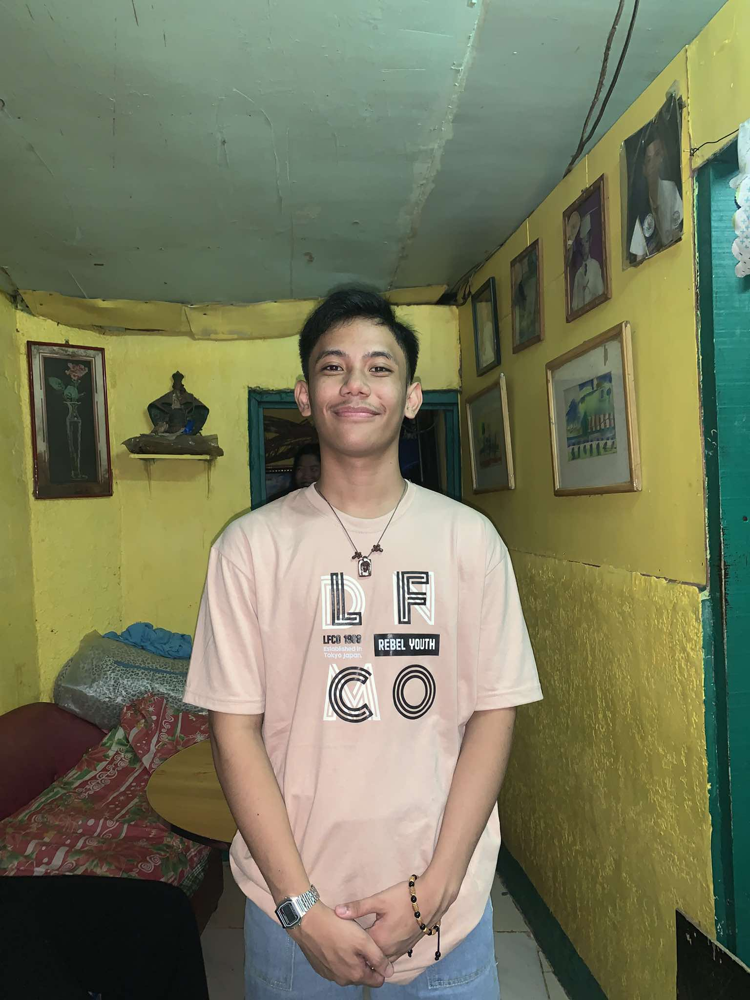

Qualification
A Blogs & Personal Websites project should clearly show the owner, explain the site purpose, and organize posts so visitors can find topics fast.
Online publishing platform
This website is designed for publishing articles, personal journals, updates, and niche content in a clear professional format.
It keeps the core concept of a blog: fresh posts, category tags, readable articles, comments, photos, and a simple way for readers to contact the owner.
Read The Blog
A Blogs & Personal Websites project should clearly show the owner, explain the site purpose, and organize posts so visitors can find topics fast.
I am currently studying Computer Technology and building a stronger foundation in software and computer systems. My interests include programming, esports, database work in Excel VBA, and helping people solve technical problems.
Email: tuazonc410@gmail.com
Phone: 09511590303
Facebook: Christian Tuazon
2nd Yr College in EARIST Manila
Computer Technology Student
To keep improving as a developer and tech professional while creating useful, practical work that can grow into bigger opportunities in the future.
BrightPath gives writers and students a clean place to publish useful content, share ideas, and build a personal online identity.
To make the site feel professional, easy to update, and complete enough for a Blogs & Personal Websites qualification.